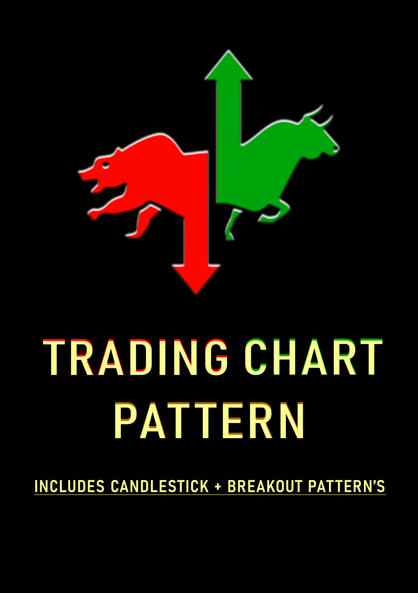

Candalastic Chart Pattern Book
99₹
250₹
Welcome to the Candalastic Chart Pattern Book website! This book is a comprehensive guide to understanding and using candlestick chart patterns in the stock market. Whether you're a beginner or an experienced trader, this book will provide valuable insights and strategies to help you make informed trading decisions.